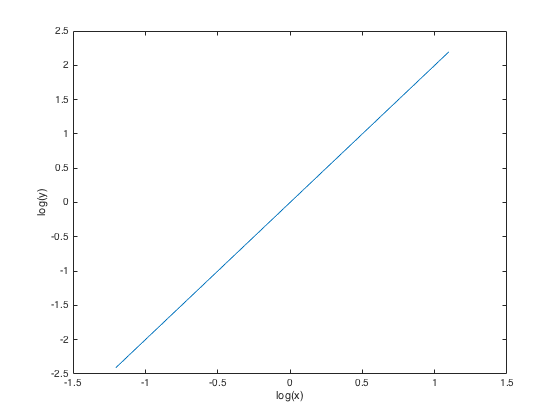
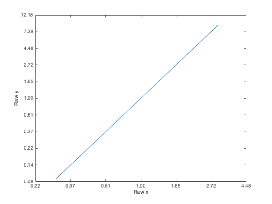
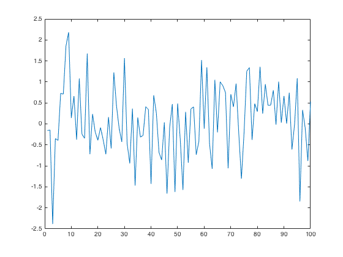
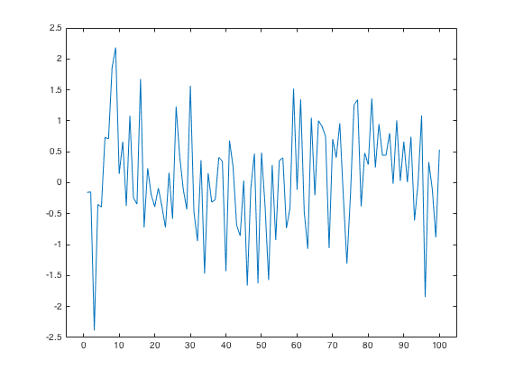
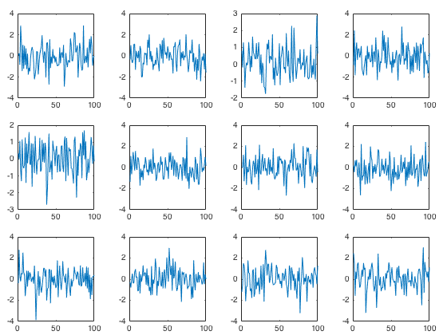
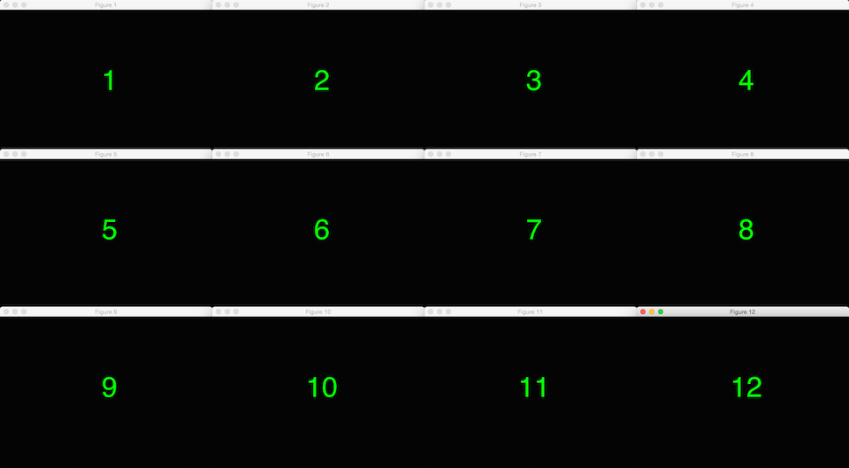

PlotDemo.m
Contents
logx2raw.m & logy2raw.m
These two functions will replot logarithmic X-axis and Y-axis labels from the log scale of the data...
x = linspace(-3,0,11); figure(1); clf; plot(log(x), log(x.^2)); xlabel('log(x)'); ylabel('log(y)');
Warning: Imaginary parts of complex X and/or Y arguments ignored
..to the raw data scale, just spaced out in logarithmic steps.
figure(2); clf; plot(log(x), log(x.^2)); logx2raw(); logy2raw(); % should be tolerant to multiple calls xlabel('Raw x'); ylabel('Raw y');
Warning: Imaginary parts of complex X and/or Y arguments ignored
widen.m
A very commonly graphing problem is when the data at the extreme X-axis ends get squished almost off the graphing area.
x = randn(100,1); figure(3); clf; plot(x);
widen.m essentially 'widens' the X-axis at the extremes.
figure(4); clf; plot(x); widen();
subp.m
A variant on MATLAB's subplot.m. The difference is that subp.m allows for a tighters figure spacing (that is custumizable).
figure(5); clf; for i = 1:12 subp(3, 4, i); plot(randn(100,1)); end
tile.m
MATLAB automatically plots multiple figures on top of each other to the point where clicking and dragging all nth figures to be display-ble is a nightmare. tile.m will figure out the figure sizes and screen configuration that will allow the most graphs to be viewable on one computer monitor.
% for i = 1:12 % figure(i); clf; % set(gcf, 'MenuBar', 'none', 'Color', 'k'); % text(0, 0, num2str(i), 'FontSize', 64, ... % 'HorizontalAlignment', 'Center', 'Color', 'g'); % set(gca, 'XLim', [-1 1], 'YLim', [-1 1]); % axis off; % end % tile(3,4);
It was not possible to HTML render the screen via MATLAB, but here is what the computer monitor should look like after running the above chunk of code.
